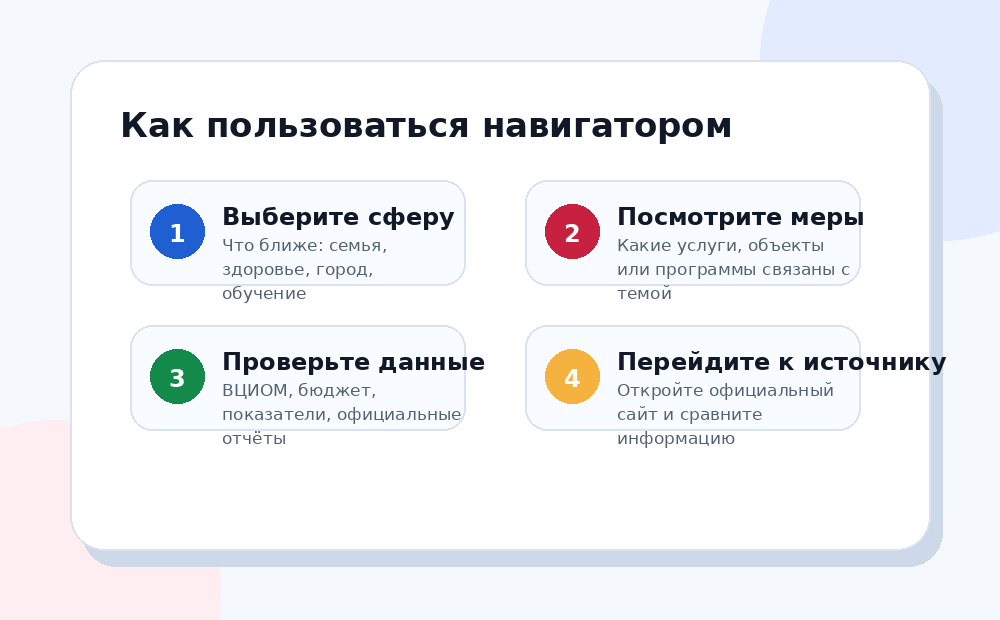

Показываем, как национальные проекты работают на практике: от государственных целей и бюджета до результатов, которые касаются каждого.

Это не презентация с общими словами, а навигатор: можно выбрать тему, понять меры, увидеть данные и перейти к источникам.
Кратко понять, какие национальные проекты действуют в период 2025–2030 и что означает каждый из них.
Посмотреть понятные примеры: материнский капитал, диспансеризация, благоустройство, поддержка бизнеса, цифровые услуги.
Разобраться, где смотреть официальные данные, бюджет, показатели и практические результаты.
Если вы впервые сталкиваетесь с темой, начните с простого объяснения, затем перейдите к каталогу и данным.
Национальные проекты связывают цели развития, федеральные проекты, бюджет, мероприятия и показатели.
Семья, здоровье, образование, городская среда, экономика, экология — каждая сфера показывает, как проект касается жизни.
Официальные сайты дают описание проектов, ВЦИОМ показывает общественное восприятие, бюджетные системы помогают увидеть исполнение.